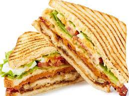

Sandwich

A sandwich is a type of food that typically consists of two slices of bread with a filling in between them. The most common fillings for sandwiches are meats, cheeses, and vegetables, but there are many other possibilities.
Ingredients
Steps
- Choose your bread. There are many different types of bread available, so choose the one that you think will best complement your sandwich filling.
- Choose your filling. This can be anything from meats and cheeses to vegetables and spreads.
- Choose your condiments. These can include sauces, spreads, and dressings.
- Assemble your sandwich. Place the bread on a plate or cutting board, and add the filling and condiments.
- Enjoy!